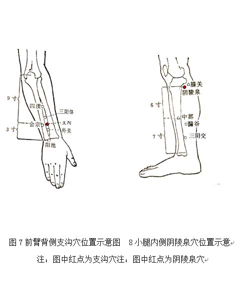

血淤质调理方法
1. 调体专用产品
【名称】桃红饮
【食用方法】每次1-2袋，以适量温开水冲调食用，每天2次。
2. 情志调摄
遇事宜沉稳，努力克服浮躁情绪。
宜欣赏流畅抒情的音乐，如《春江花月夜》等。
3. 饮食调养
宜选用具有调畅气血作用的食物，如生山楂、醋、玫瑰花、桃仁（花）、黑豆、油菜、黑木耳等。还可少量饮用葡萄酒、糯米甜酒，有助于促进血液运行，但高血压和冠心病等患者不宜饮用。女性月经期间慎用活血类食物。
少食收涩、寒凉、冰冻之物，如乌梅、柿子、石榴、苦瓜、花生米，以及高脂肪、高胆固醇、油腻食物，如蛋黄、虾、猪头肉、猪脑、奶酪等。
参考食疗方：（1）黑豆川芎粥：川芎、黑豆、大米，具有活血祛瘀功效，适合血瘀体质者食用。
（2）红花三七蒸老母鸡：老母鸡、参三七、红花、陈皮，具有活血行气功效，适合血瘀体质患有胸痹、痛证者食用。
4. 起居调摄
居室宜温暖舒适，不宜在阴暗、寒冷的环境中长期工作和生活。衣着宜宽松，注意保暖，保持大便通畅。不宜贪图安逸，宜在阳光充足的时候进行户外活动。避免长时间打麻将、久坐、看电视等。
5. 运动保健
宜进行有助于促进气血运行的运动项目，持之以恒。如步行健身法，或者八段锦，在完成整套动作后将“左右开弓似射雕”和“背后七颠百病消”加做1～3遍。避免在封闭环境中进行锻炼。锻炼强度视身体情况而定，不宜进行大强度、大负荷运动，以防意外。
6. 穴位保健
（1）选穴：期门、血海。
（2）定位：期门位于胸部，当乳头直下，第6肋间隙，前正中线旁开4寸（见图9）。血海：屈膝，在大腿内侧，髌底内侧端上2寸，当股四头肌内侧头的隆起处（见图10）。
（3）操作：采用指揉法。用大拇指或中指指腹按压穴位，做轻柔缓和的环旋活动，以穴位感到酸胀为度，按揉2～3分钟。每天操作1～2次。
